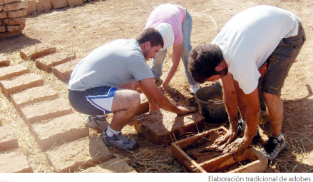

El simbolo del reciclaje
Alumno:
El simbolo del reciclaje
Alumno:
 Reflexiono para avanzar
Reflexiono para avanzar
Observa las siguientes imágenes. ¿Qué conocimientos ancestrales reflejan?

 Comprendo para saber
Comprendo para saber
Llamamos “conocimientos ancestrales” a todos los saberes que poseen los pueblos y comunidades desde hace mucho tiempo. Estos se han transmitido de generación en generación a través de los siglos, por medio de la tradición oral. También se conservan mediante las tradiciones, prácticas y costumbres que se transmiten dentro de las familias y de las comunidades.
Los conocimientos ancestrales son de diversa naturaleza. Por ejemplo, en la primera imagen podemos ver que los kitu-karas tuvieron conocimientos astronómicos exactos, pues su sustento dependía de los ciclos agrícolas, que están relacionados con las estaciones. Sus observaciones eran tan precisas que incluso alinearon sus construcciones con la línea ecuatorial, muchos años antes de la llegada de la Misión Geodésica Francesa.
Los conocimientos sobre el uso de los alimentos, la preparación de platos, técnicas de cocina, creación de utensilios, etc., son otra forma del saber ancestral. En la segunda imagen vemos una técnica ancestral: la cocción en fogón, sobre un tiesto de barro.
Actualmente, seguimos utilizando técnicas y conocimientos ancestrales, por ejemplo, en el área de la construcción. Aún hoy se construyen casas con técnicas milenarias como el adobe, utilizando para ello materiales como la cangahua y el chocoto.
El uso de plantas medicinales; las formas de cuidar de los enfermos, de la mujer embarazada y de los bebés; las técnicas de conservación del suelo, de agricultura y de pesca; la producción de tejidos y de cerámica, son ejemplos, entre muchos otros, de la diversidad de saberes ancestrales que hemos heredado de nuestros antepasados.